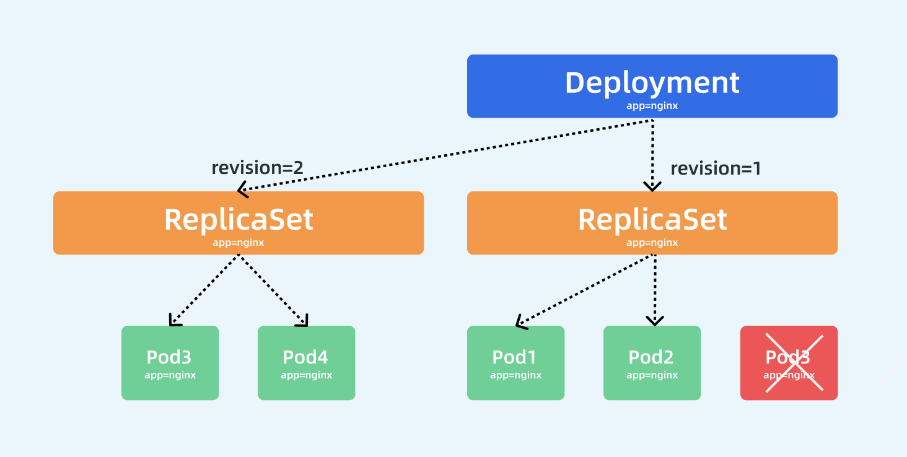

Deployment 控制器¶
前面我们学习了 ReplicaSet 控制器，了解到该控制器是用来维护集群中运行的 Pod 数量的，但是往往在实际操作的时候，我们反而不会去直接使用 RS，而是会使用更上层的控制器，比如我们今天要学习的主角 Deployment，Deployment 一个非常重要的功能就是实现了 Pod 的滚动更新，比如我们应用更新了，我们只需要更新我们的容器镜像，然后修改 Deployment 里面的 Pod 模板镜像，那么 Deployment 就会用滚动更新（Rolling Update）的方式来升级现在的 Pod，这个能力是非常重要的，因为对于线上的服务我们需要做到不中断服务，所以滚动更新就成了必须的一个功能。而 Deployment 这个能力的实现，依赖的就是上节课我们学习的 ReplicaSet 这个资源对象，实际上我们可以通俗的理解就是每个 Deployment 就对应集群中的一次部署，这样就更好理解了。
Deployment¶
Deployment 资源对象的格式和 ReplicaSet 几乎一致，如下资源对象就是一个常见的 Deployment 资源类型：
# nginx-deploy.yaml
apiVersion: apps/v1
kind: Deployment
metadata:
name: nginx-deploy
namespace: default
spec:
replicas: 3 # 期望的 Pod 副本数量，默认值为1
selector: # Label Selector，必须匹配 Pod 模板中的标签
matchLabels:
app: nginx
template: # Pod 模板
metadata:
labels:
app: nginx
spec:
containers:
- name: nginx
image: nginx
ports:
- containerPort: 80
我们这里只是将类型替换成了 Deployment，我们可以先来创建下这个资源对象：
➜ ~ kubectl apply -f nginx-deploy.yaml
deployment.apps/nginx-deploy created
➜ ~ kubectl get deployment
NAME READY UP-TO-DATE AVAILABLE AGE
nginx-deploy 3/3 3 3 58s
创建完成后，查看 Pod 状态：
➜ ~ kubectl get pods -l app=nginx
NAME READY STATUS RESTARTS AGE
nginx-deploy-85ff79dd56-7r76h 1/1 Running 0 41s
nginx-deploy-85ff79dd56-d5gjs 1/1 Running 0 41s
nginx-deploy-85ff79dd56-txc4h 1/1 Running 0 41s
到这里我们发现和之前的 RS 对象是否没有什么两样，都是根据spec.replicas来维持的副本数量，我们随意查看一个 Pod 的描述信息：
➜ ~ kubectl describe pod nginx-deploy-85ff79dd56-txc4h
Name: nginx-deploy-85ff79dd56-txc4h
Namespace: default
Priority: 0
PriorityClassName: <none>
Node: node1/10.151.30.22
Start Time: Sat, 16 Nov 2019 16:01:25 +0800
Labels: app=nginx
pod-template-hash=85ff79dd56
Annotations: podpreset.admission.kubernetes.io/podpreset-time-preset: 2062768
Status: Running
IP: 10.244.1.166
Controlled By: ReplicaSet/nginx-deploy-85ff79dd56
......
Events:
Type Reason Age From Message
---- ------ ---- ---- -------
Normal Scheduled <unknown> default-scheduler Successfully assigned default/nginx-deploy-85ff79dd56-txc4h to node1
Normal Pulling 2m kubelet, node1 Pulling image "nginx"
Normal Pulled 117s kubelet, node1 Successfully pulled image "nginx"
Normal Created 117s kubelet, node1 Created container nginx
Normal Started 116s kubelet, node1 Started container nginx
我们仔细查看其中有这样一个信息 Controlled By: ReplicaSet/nginx-deploy-85ff79dd56，什么意思？是不是表示当前我们这个 Pod 的控制器是一个 ReplicaSet 对象啊，我们不是创建的一个 Deployment 吗？为什么 Pod 会被 RS 所控制呢？那我们再去看下这个对应的 RS 对象的详细信息如何呢：

➜ ~ kubectl get pod nginx-deploy-69f668cd84-qvcc4 -o yaml
apiVersion: v1
kind: Pod
metadata:
...
spec:
...
preemptionPolicy: PreemptLowerPriority
priority: 0
restartPolicy: Always
schedulerName: default-scheduler
securityContext: {}
serviceAccount: default
serviceAccountName: default
terminationGracePeriodSeconds: 30
...
通过上图我们可以很清楚的看到，定义了3个副本的 Deployment 与 ReplicaSet 和 Pod 的关系，就是一层一层进行控制的。ReplicaSet 作用和之前一样还是来保证 Pod 的个数始终保存指定的数量，所以 Deployment 中的容器 restartPolicy=Always 是唯一的就是这个原因，因为容器必须始终保证自己处于 Running 状态，ReplicaSet 才可以去明确调整 Pod 的个数。而 Deployment 是通过管理 ReplicaSet 的数量和属性来实现水平扩展/收缩以及滚动更新两个功能的。
水平伸缩¶
水平扩展/收缩的功能比较简单，因为 ReplicaSet 就可以实现，所以 Deployment 控制器只需要去修改它缩控制的 ReplicaSet 的 Pod 副本数量就可以了。比如现在我们把 Pod 的副本调整到 4 个，那么 Deployment 所对应的 ReplicaSet 就会自动创建一个新的 Pod 出来，这样就水平扩展了，我们可以使用一个新的命令 kubectl scale 命令来完成这个操作：
可以看到期望的 Pod 数量已经变成 4 了，只是 Pod 还没准备完成，所以 READY 状态数量还是 3，同样查看 RS 的详细信息：
➜ ~ kubectl describe rs nginx-deploy-85ff79dd56
Name: nginx-deploy-85ff79dd56
Namespace: default
Selector: app=nginx,pod-template-hash=85ff79dd56
......
Events:
Type Reason Age From Message
---- ------ ---- ---- -------
Normal SuccessfulCreate 40m replicaset-controller Created pod: nginx-deploy-85ff79dd56-7r76h
Normal SuccessfulCreate 40m replicaset-controller Created pod: nginx-deploy-85ff79dd56-d5gjs
Normal SuccessfulCreate 40m replicaset-controller Created pod: nginx-deploy-85ff79dd56-txc4h
Normal SuccessfulCreate 17s replicaset-controller Created pod: nginx-deploy-85ff79dd56-tph9g
可以看到 ReplicaSet 控制器增加了一个新的 Pod，同样的 Deployment 资源对象的事件中也可以看到完成了扩容的操作：
➜ ~ kubectl describe deploy nginx-deploy
Name: nginx-deploy
Namespace: default
......
OldReplicaSets: <none>
NewReplicaSet: nginx-deploy-85ff79dd56 (4/4 replicas created)
Events:
Type Reason Age From Message
---- ------ ---- ---- -------
Normal ScalingReplicaSet 43m deployment-controller Scaled up replica set nginx-deploy-85ff79dd56 to 3
Normal ScalingReplicaSet 3m16s deployment-controller Scaled up replica set nginx-deploy-85ff79dd56 to 4
滚动更新¶
如果只是水平扩展/收缩这两个功能，就完全没必要设计 Deployment 这个资源对象了，Deployment 最突出的一个功能是支持滚动更新 ，比如现在我们需要把应用容器更改为 nginx:1.7.9 版本，修改后的资源清单文件如下所示：
apiVersion: apps/v1
kind: Deployment
metadata:
name: nginx-deploy
namespace: default
spec:
replicas: 3
selector:
matchLabels:
app: nginx
minReadySeconds: 5
strategy:
type: RollingUpdate # 指定更新策略：RollingUpdate和Recreate
rollingUpdate:
maxSurge: 1
maxUnavailable: 1
template:
metadata:
labels:
app: nginx
spec:
containers:
- name: nginx
image: nginx:1.7.9
ports:
- containerPort: 80
和前面相比较，除了更改了镜像之外，我们还指定了更新策略：
- minReadySeconds：表示 Kubernetes 在等待设置的时间后才进行升级，如果没有设置该值，Kubernetes 会假设该容器启动起来后就提供服务了，如果没有设置该值，在某些极端情况下可能会造成服务不正常运行，默认值就是0。
- type=RollingUpdate：表示设置更新策略为滚动更新，可以设置为
Recreate和RollingUpdate两个值，Recreate表示全部重新创建，默认值就是RollingUpdate。 - maxSurge：表示升级过程中最多可以比原先设置多出的 Pod 数量，例如：
maxSurage=1，replicas=5，就表示Kubernetes 会先启动一个新的Pod，然后才删掉一个旧的 Pod，整个升级过程中最多会有5+1个 Pod。 - maxUnavaible：表示升级过程中最多有多少个 Pod 处于无法提供服务的状态，当
maxSurge不为0时，该值也不能为0，例如：maxUnavaible=1，则表示 Kubernetes 整个升级过程中最多会有1个 Pod 处于无法服务的状态。
现在我们来直接更新上面的 Deployment 资源对象：
record 参数
我们可以添加了一个额外的 --record 参数来记录下我们的每次操作所执行的命令，以方便后面查看。
更新后，我们可以执行下面的 kubectl rollout status 命令来查看我们此次滚动更新的状态：
➜ ~ kubectl rollout status deployment/nginx-deploy
Waiting for deployment "nginx-deploy" rollout to finish: 2 out of 3 new replicas have been updated...
从上面的信息可以看出我们的滚动更新已经有两个 Pod 已经更新完成了，在滚动更新过程中，我们还可以执行如下的命令来暂停更新：
这个时候我们的滚动更新就暂停了，此时我们可以查看下 Deployment 的详细信息：
➜ ~ kubectl describe deploy nginx-deploy
Name: nginx-deploy
Namespace: default
CreationTimestamp: Sat, 16 Nov 2019 16:01:24 +0800
Labels: <none>
Annotations: deployment.kubernetes.io/revision: 2
kubectl.kubernetes.io/last-applied-configuration:
{"apiVersion":"apps/v1","kind":"Deployment","metadata":{"annotations":{},"name":"nginx-deploy","namespace":"default"},"spec":{"minReadySec...
Selector: app=nginx
Replicas: 3 desired | 2 updated | 4 total | 4 available | 0 unavailable
StrategyType: RollingUpdate
MinReadySeconds: 5
RollingUpdateStrategy: 1 max unavailable, 1 max surge
......
OldReplicaSets: nginx-deploy-85ff79dd56 (2/2 replicas created)
NewReplicaSet: nginx-deploy-5b7b9ccb95 (2/2 replicas created)
Events:
Type Reason Age From Message
---- ------ ---- ---- -------
Normal ScalingReplicaSet 26m deployment-controller Scaled up replica set nginx-deploy-85ff79dd56 to 4
Normal ScalingReplicaSet 3m44s deployment-controller Scaled down replica set nginx-deploy-85ff79dd56 to 3
Normal ScalingReplicaSet 3m44s deployment-controller Scaled up replica set nginx-deploy-5b7b9ccb95 to 1
Normal ScalingReplicaSet 3m44s deployment-controller Scaled down replica set nginx-deploy-85ff79dd56 to 2
Normal ScalingReplicaSet 3m44s deployment-controller Scaled up replica set nginx-deploy-5b7b9ccb95 to 2

我们仔细观察 Events 事件区域的变化，上面我们用 kubectl scale 命令将 Pod 副本调整到了 4，现在我们更新的时候是不是声明又变成 3 了，所以 Deployment 控制器首先是将之前控制的 nginx-deploy-85ff79dd56 这个 RS 资源对象进行缩容操作，然后滚动更新开始了，可以发现 Deployment 为一个新的 nginx-deploy-5b7b9ccb95 RS 资源对象首先新建了一个新的 Pod，然后将之前的 RS 对象缩容到 2 了，再然后新的 RS 对象扩容到 2，后面由于我们暂停滚动升级了，所以没有后续的事件了，大家有看明白这个过程吧？这个过程就是滚动更新的过程，启动一个新的 Pod，杀掉一个旧的 Pod，然后再启动一个新的 Pod，这样滚动更新下去，直到全都变成新的 Pod，这个时候系统中应该存在 4 个 Pod，因为我们设置的策略maxSurge=1，所以在升级过程中是允许的，而且是两个新的 Pod，两个旧的 Pod：
➜ ~ kubectl get pods -l app=nginx
NAME READY STATUS RESTARTS AGE
nginx-deploy-5b7b9ccb95-k6pkh 1/1 Running 0 11m
nginx-deploy-5b7b9ccb95-l6lmx 1/1 Running 0 11m
nginx-deploy-85ff79dd56-7r76h 1/1 Running 0 75m
nginx-deploy-85ff79dd56-txc4h 1/1 Running 0 75m
查看 Deployment 的状态也可以看到当前的 Pod 状态：
这个时候我们可以使用kubectl rollout resume来恢复我们的滚动更新：
➜ ~ kubectl rollout resume deployment/nginx-deploy
deployment.apps/nginx-deploy resumed
➜ ~ kubectl rollout status deployment/nginx-deploy
Waiting for deployment "nginx-deploy" rollout to finish: 2 of 3 updated replicas are available...
deployment "nginx-deploy" successfully rolled out
看到上面的信息证明我们的滚动更新已经成功了，同样可以查看下资源状态：
➜ ~ kubectl get pod -l app=nginx
NAME READY STATUS RESTARTS AGE
nginx-deploy-5b7b9ccb95-gmq7v 1/1 Running 0 115s
nginx-deploy-5b7b9ccb95-k6pkh 1/1 Running 0 15m
nginx-deploy-5b7b9ccb95-l6lmx 1/1 Running 0 15m
➜ ~ kubectl get deployment
NAME READY UP-TO-DATE AVAILABLE AGE
nginx-deploy 3/3 3 3 79m
这个时候我们查看 ReplicaSet 对象，可以发现会出现两个：
➜ ~ kubectl get rs -l app=nginx
NAME DESIRED CURRENT READY AGE
nginx-deploy-5b7b9ccb95 3 3 3 18m
nginx-deploy-85ff79dd56 0 0 0 81m
从上面可以看出滚动更新之前我们使用的 RS 资源对象的 Pod 副本数已经变成 0 了，而滚动更新后的 RS 资源对象变成了 3 个副本，我们可以导出之前的 RS 对象查看：
➜ ~ kubectl get rs nginx-deploy-85ff79dd56 -o yaml
apiVersion: apps/v1
kind: ReplicaSet
metadata:
annotations:
deployment.kubernetes.io/desired-replicas: "3"
deployment.kubernetes.io/max-replicas: "4"
deployment.kubernetes.io/revision: "1"
creationTimestamp: "2019-11-16T08:01:24Z"
generation: 5
labels:
app: nginx
pod-template-hash: 85ff79dd56
name: nginx-deploy-85ff79dd56
namespace: default
ownerReferences:
- apiVersion: apps/v1
blockOwnerDeletion: true
controller: true
kind: Deployment
name: nginx-deploy
uid: b0fc5614-ef58-496c-9111-740353bd90d4
resourceVersion: "2140545"
selfLink: /apis/apps/v1/namespaces/default/replicasets/nginx-deploy-85ff79dd56
uid: 8eca2998-3610-4f80-9c21-5482ba579892
spec:
replicas: 0
selector:
matchLabels:
app: nginx
pod-template-hash: 85ff79dd56
template:
metadata:
creationTimestamp: null
labels:
app: nginx
pod-template-hash: 85ff79dd56
spec:
containers:
- image: nginx
imagePullPolicy: Always
name: nginx
ports:
- containerPort: 80
protocol: TCP
resources: {}
terminationMessagePath: /dev/termination-log
terminationMessagePolicy: File
dnsPolicy: ClusterFirst
restartPolicy: Always
schedulerName: default-scheduler
securityContext: {}
terminationGracePeriodSeconds: 30
status:
observedGeneration: 5
replicas: 0
我们仔细观察这个资源对象里面的描述信息除了副本数变成了 replicas=0 之外，和更新之前没有什么区别吧？大家看到这里想到了什么？有了这个 RS 的记录存在，是不是我们就可以回滚了啊？而且还可以回滚到前面的任意一个版本，这个版本是如何定义的呢？我们可以通过命令 rollout history 来获取：
➜ ~ kubectl rollout history deployment nginx-deploy
deployment.apps/nginx-deploy
REVISION CHANGE-CAUSE
1 <none>
2 <none>
其实 rollout history 中记录的 revision 是和 ReplicaSets 一一对应。如果我们手动删除某个 ReplicaSet，对应的rollout history就会被删除，也就是说你无法回滚到这个revison了，同样我们还可以查看一个revison的详细信息：
➜ ~ kubectl rollout history deployment nginx-deploy --revision=1
deployment.apps/nginx-deploy with revision #1
Pod Template:
Labels: app=nginx
pod-template-hash=85ff79dd56
Containers:
nginx:
Image: nginx
Port: 80/TCP
Host Port: 0/TCP
Environment: <none>
Mounts: <none>
Volumes: <none>
假如现在要直接回退到当前版本的前一个版本，我们可以直接使用如下命令进行操作：
当然也可以回退到指定的revision版本：
➜ ~ kubectl rollout undo deployment nginx-deploy --to-revision=1
deployment "nginx-deploy" rolled back
回滚的过程中我们同样可以查看回滚状态：
➜ ~ kubectl rollout status deployment/nginx-deploy
Waiting for deployment "nginx-deploy" rollout to finish: 1 old replicas are pending termination...
Waiting for deployment "nginx-deploy" rollout to finish: 1 old replicas are pending termination...
Waiting for deployment "nginx-deploy" rollout to finish: 1 old replicas are pending termination...
Waiting for deployment "nginx-deploy" rollout to finish: 2 of 3 updated replicas are available...
Waiting for deployment "nginx-deploy" rollout to finish: 2 of 3 updated replicas are available...
deployment "nginx-deploy" successfully rolled out
这个时候查看对应的 RS 资源对象可以看到 Pod 副本已经回到之前的 RS 里面去了。
➜ ~ kubectl get rs -l app=nginx
NAME DESIRED CURRENT READY AGE
nginx-deploy-5b7b9ccb95 0 0 0 31m
nginx-deploy-85ff79dd56 3 3 3 95m
不过需要注意的是回滚的操作滚动的revision始终是递增的：
➜ ~ kubectl rollout history deployment nginx-deploy
deployment.apps/nginx-deploy
REVISION CHANGE-CAUSE
2 <none>
3 <none>
保留旧版本
在很早之前的 Kubernetes 版本中，默认情况下会为我们暴露下所有滚动升级的历史记录，也就是 ReplicaSet 对象，但一般情况下没必要保留所有的版本，毕竟会存在 etcd 中，我们可以通过配置 spec.revisionHistoryLimit 属性来设置保留的历史记录数量，不过新版本中该值默认为 10，如果希望多保存几个版本可以设置该字段。